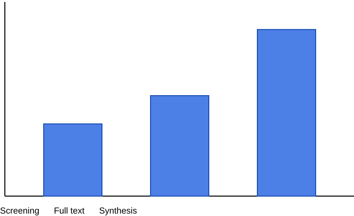

Test Author, Example University
We describe a small synthetic document used to check that extracted text, tables and figures match the original PDF without additions or omissions.
This synthetic paper exists only to test the verified PDF path in 3Pass. It contains headings, body text, a ruled table, a vector chart and a short reference list. Doctoral students reviewing literature need extracted text that matches the source exactly. Every
block in this file can be checked against the PDF text layer and its page geometry.
The table below reports invented counts for three review stages. The numbers have no meaning outside this test and were chosen so that each cell value is distinct.
| Stage | Papers | Kept | Rate |
|---|---|---|---|
| Screening | 412 | 118 | 28.6% |
| Full text | 118 | 47 | 39.8% |
| Synthesis | 47 | 31 | 66.0% |

Because the chart is drawn with vector graphics, a converter must render the figure region rather than copy an embedded bitmap.